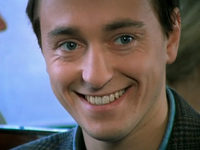
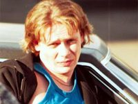
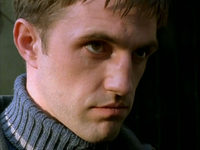

Бригада
«Бригада» - российский криминальный телесериал 2002 года. Сериал состоит из 15 серий, охватывающих события с 1989 по 2000 год. В центре сюжета стоит история четырёх друзей, объединившихся в преступную группировку, лидером которой стал Александр Белов (Саша Белый). Телесериал снят кинокомпанией «Аватар фильм».
Актеры
|  |
|
 |
 |
| Саша Белый |
Космос |
Пчёла |
Фил |
| Сергей Безруков |
Дмитрий Дюжев |
Павел Майков |
Владимир Вдовиченков |